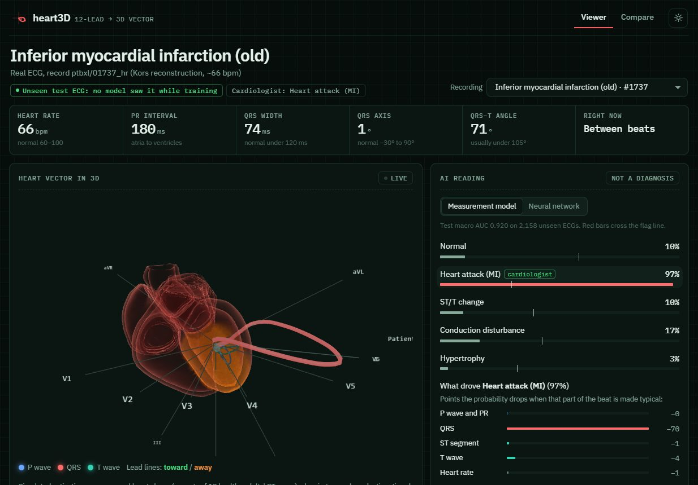

01 Biomedical · AI · 3D
heart3D
An ECG is twelve flat shadows of one arrow swinging through the heart. heart3D rebuilds that arrow in 3D from real hospital recordings, animates it beat by beat, and lets two AI models read the trace and show which part of the heartbeat drove their answer.
- 21,799
- real ECGs (PTB-XL)
- 0.92
- AUC, 5 diagnosis groups
- 0.96
- AUC, heart-attack wall
- Reconstructs the 3D heart vector with the Kors matrix and plays it in three.js.
- A gradient-boosted model on measurements and a 1D ResNet on raw signals, both close to published benchmarks.
- Shades the likely heart-attack wall on an anatomical heart, plus a normal-vs-abnormal comparison page.
A learning tool, not a medical device.
Python · NumPy · scikit-learn · PyTorch · signal processing · three.js